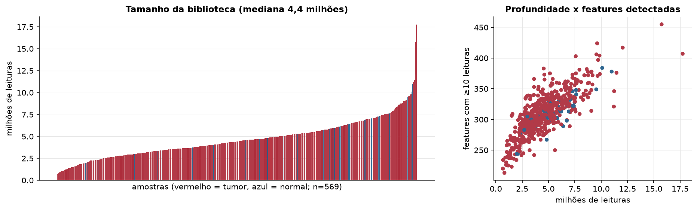
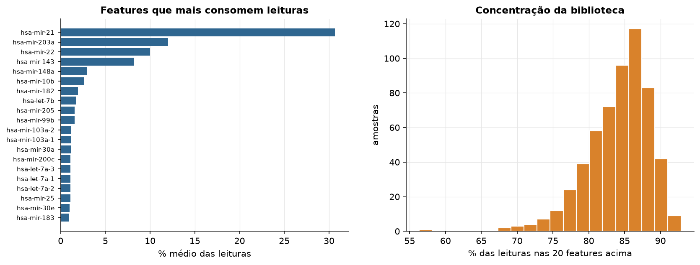
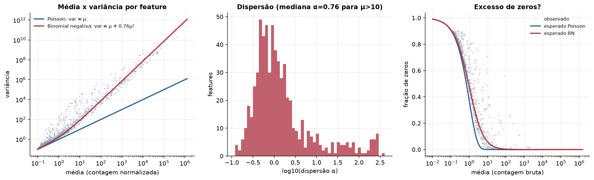
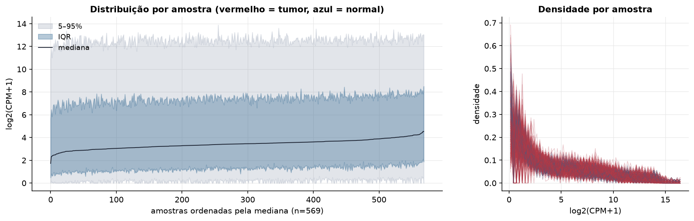
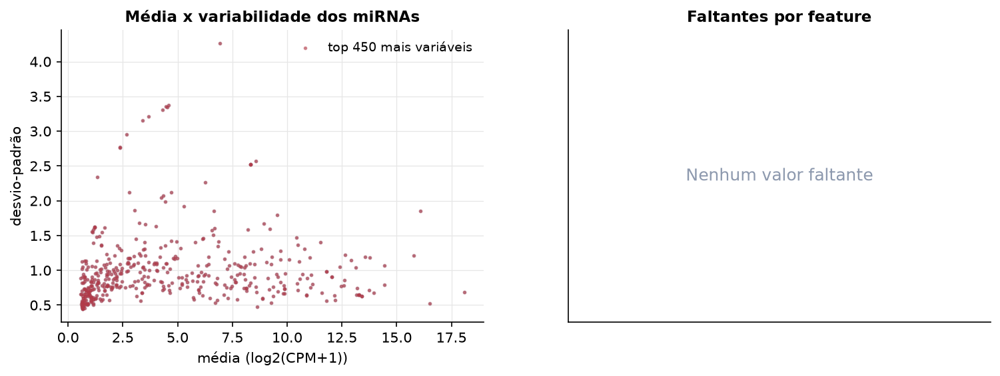
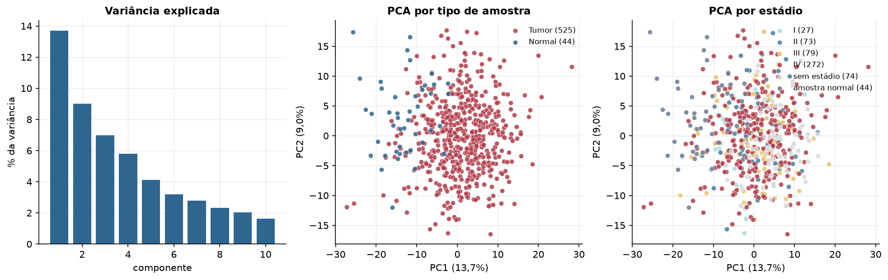
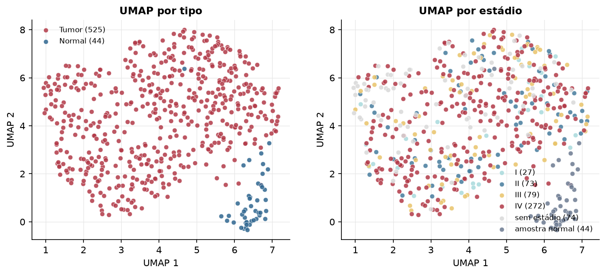
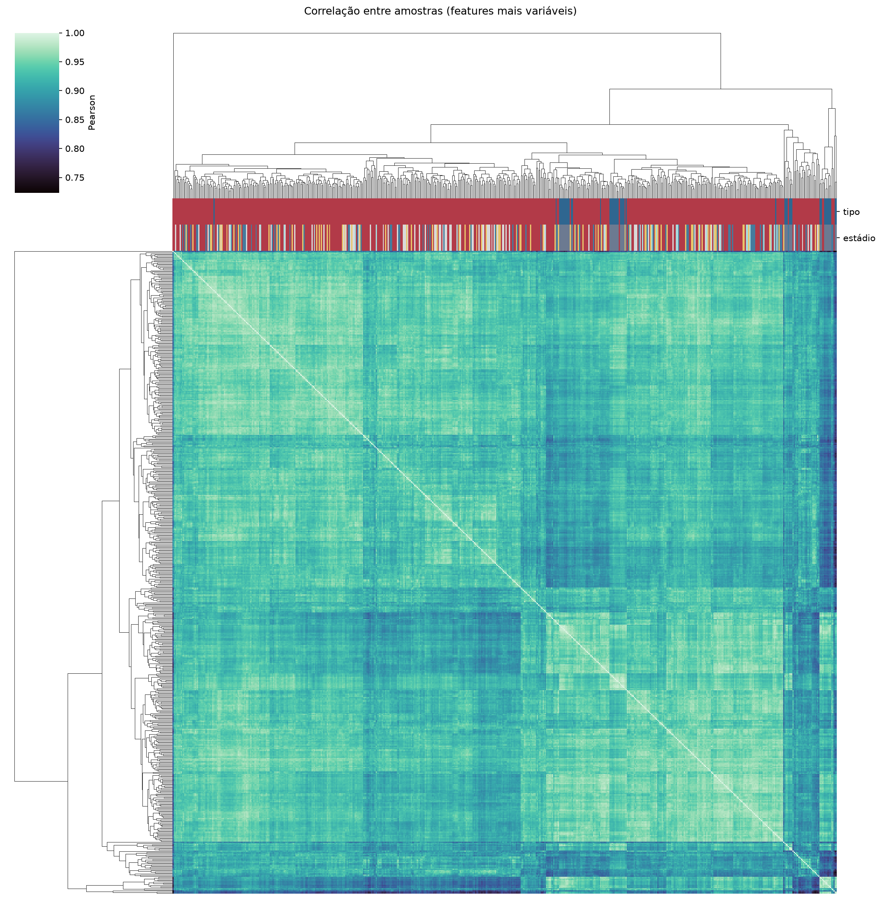
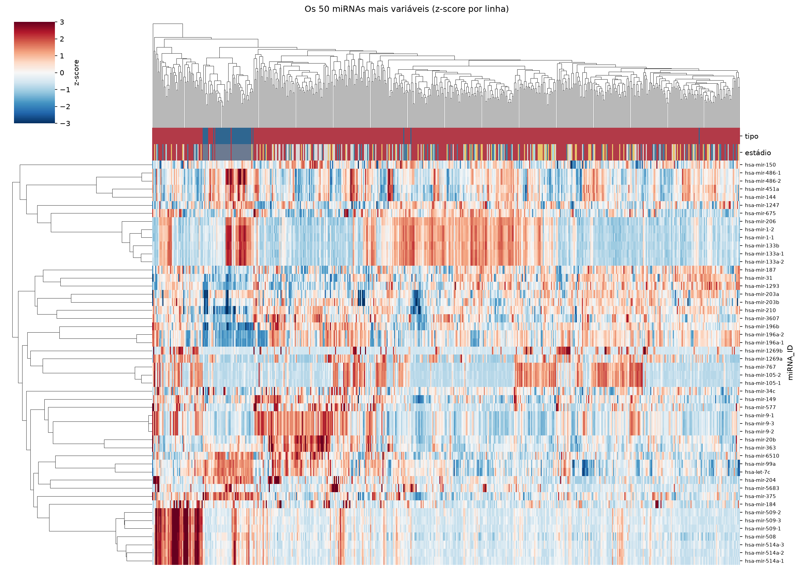
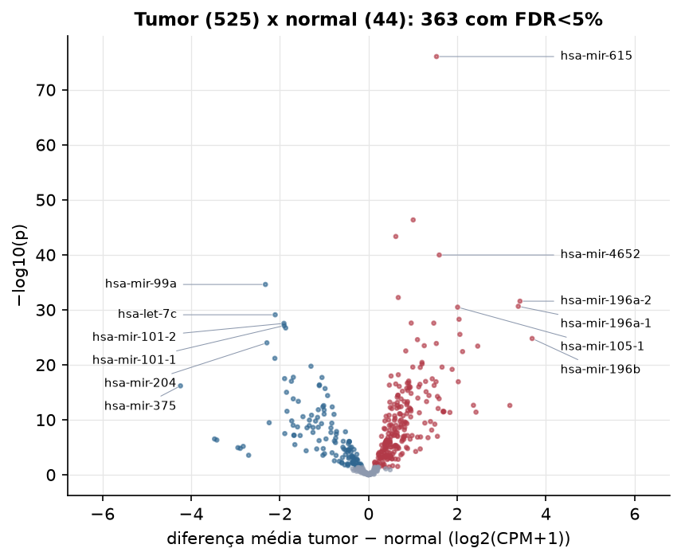

HNSC · miRNA-seq: contagens brutas (GDC)
BCGSC miRNA Profiling (miRBase v21) · gerado em 21/10/2026 21:56
4,4 Mtamanho mediano
0,76dispersão mediana α
450miRNAs
525amostras tumorais
44amostras normais
0,0%valores faltantes
Fonte: API do GDC (BCGSC miRNA Profiling)
Principais resultados
- Bibliotecas de 0,7 a 17,7 milhões de leituras (mediana 4,4). 1.085 de 1.881 features têm leitura em pelo menos 10% das amostras.
- A variância cresce bem acima da média: a dispersão mediana da binomial negativa é α=0.76 (para features com média > 10). Isso descarta um modelo Poisson e indica binomial negativa (ou Poisson-lognormal) na verossimilhança.
- A fração de zeros é compatível com a binomial negativa (diferença mediana -2,2%); inflação de zeros não parece necessária.
- Em média 84,9% das leituras de cada amostra vão para as 20 features mais abundantes.
- 450 miRNAs medidos em 569 amostras (525 tumorais e 44 normais); 0,0% dos valores estão faltando.
- Os dois primeiros componentes principais explicam 13,7% e 9,0% da variância das features mais variáveis.
- Correlação mediana entre amostras: 0,93.
- Amostras com correlação muito abaixo das demais (possíveis outliers técnicos): TCGA-CV-6939-11, TCGA-CV-7091-11, TCGA-CV-7429-01, TCGA-D6-A6EP-01, TCGA-HD-A634-01.
- Tumor x normal: 363 miRNAs diferentes com FDR < 5% (236 maiores no tumor, 127 maiores no normal; 43 pacientes têm o par tumor-normal).
- Mais aumentados no tumor: hsa-mir-615, hsa-mir-1910, hsa-mir-548f-1, hsa-mir-4652, hsa-mir-1305, hsa-mir-196a-2, hsa-mir-196a-1, hsa-mir-105-1.
- Mais reduzidos no tumor: hsa-mir-99a, hsa-let-7c, hsa-mir-101-2, hsa-mir-101-1, hsa-mir-100, hsa-mir-204, hsa-mir-29c, hsa-mir-29a.
- Associações clínicas com p < 0,05 nos componentes principais: PC2 com sobrevida (p=0.0007).
Biblioteca


Sobredispersão e zeros

Exploração em log2(CPM+1)
Features com CPM ≥ 1 em pelo menos 20% das amostras (450 features).
Distribuição dos valores


Estrutura das amostras




Tumor x normal

Features mais diferentes entre tumor e normal
| miRNA_ID | diferenca_tumor_menos_normal | t | p | fdr |
|---|---|---|---|---|
| hsa-mir-615 | 1.532 | 28.124 | 9e-77 | 4.05e-74 |
| hsa-mir-1910 | 1.006 | 20.299 | 4.54e-47 | 1.02e-44 |
| hsa-mir-548f-1 | 0.614 | 15.228 | 4.66e-44 | 6.99e-42 |
| hsa-mir-4652 | 1.594 | 19.896 | 1.09e-40 | 1.22e-38 |
| hsa-mir-99a | -2.325 | -20.072 | 2.49e-35 | 2.24e-33 |
| hsa-mir-1305 | 0.67 | 14.963 | 5.87e-33 | 4.4e-31 |
| hsa-mir-196a-2 | 3.414 | 20.334 | 2.72e-32 | 1.75e-30 |
| hsa-mir-196a-1 | 3.376 | 19.972 | 2.34e-31 | 1.32e-29 |
| hsa-mir-105-1 | 2.008 | 13.207 | 3.35e-31 | 1.67e-29 |
| hsa-let-7c | -2.106 | -17.975 | 8.1e-30 | 3.65e-28 |
| hsa-mir-105-2 | 2.041 | 12.879 | 5.36e-29 | 2.19e-27 |
| hsa-mir-301b | 0.962 | 15.406 | 2.6e-28 | 9.24e-27 |
| hsa-mir-130b | 1.471 | 18.53 | 2.67e-28 | 9.24e-27 |
| hsa-mir-101-2 | -1.908 | -20.063 | 2.97e-28 | 9.54e-27 |
| hsa-mir-101-1 | -1.904 | -19.78 | 7.55e-28 | 2.27e-26 |
| hsa-mir-100 | -1.869 | -17.801 | 2.01e-27 | 5.66e-26 |
| hsa-mir-503 | 2.06 | 17.853 | 2.97e-26 | 7.86e-25 |
| hsa-mir-196b | 3.688 | 18.531 | 1.67e-25 | 4.17e-24 |
| hsa-mir-877 | 1.103 | 15.334 | 2.7e-25 | 6.4e-24 |
| hsa-mir-204 | -2.293 | -15.834 | 1.03e-24 | 2.31e-23 |
| hsa-mir-1301 | 1.528 | 17.292 | 1.34e-24 | 2.88e-23 |
| hsa-mir-4746 | 1.256 | 15.17 | 3.38e-24 | 6.91e-23 |
| hsa-mir-455 | 2.461 | 17.462 | 4.02e-24 | 7.87e-23 |
| hsa-mir-589 | 0.839 | 14.391 | 3.05e-23 | 5.71e-22 |
| hsa-mir-767 | 2.12 | 11.584 | 3.99e-23 | 7.18e-22 |
| hsa-mir-29c | -2.113 | -14.96 | 6.74e-22 | 1.17e-20 |
| hsa-mir-937 | 1.205 | 12.965 | 3.7e-21 | 6.16e-20 |
| hsa-mir-450a-2 | 1.207 | 13.786 | 7.21e-21 | 1.16e-19 |
| hsa-mir-29a | -1.298 | -14.073 | 1.85e-20 | 2.86e-19 |
| hsa-mir-671 | 0.997 | 13.881 | 2.64e-20 | 3.86e-19 |
Associação com variáveis clínicas
p-valores da associação dos três primeiros componentes principais (só tumores) com estádio (Kruskal-Wallis), sexo (Mann-Whitney), idade (Spearman) e sobrevida global (Cox univariado).
| estádio (Kruskal) | sexo (Mann-Whitney) | idade (Spearman) | sobrevida OS (Cox) | |
|---|---|---|---|---|
| PC1 (12,2%) | 0.449 | 0.184 | 0.245 | 0.181 |
| PC2 (9,3%) | 0.331 | 0.338 | 0.329 | 0.000699 |
| PC3 (7,2%) | 0.258 | 0.06 | 0.858 | 0.83 |